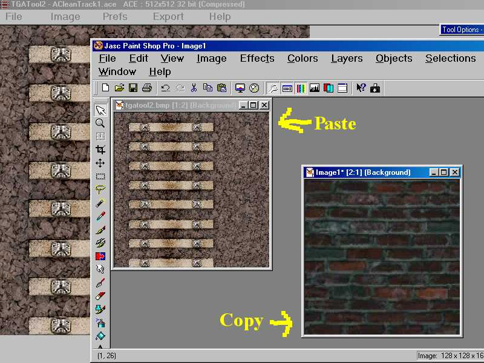

Modifying Track Textures
by Jim "sniper297" Ward
Question:Is it possible to modify a track texture so it has no ties?
Answer: First thing you need to get to convert .ACE files back and forth is TGAtool2, free from http://fly.to/mwgfx If you don't have one already, then you need a good graphics program like PSP-7 to edit the textures, although you can get by copying and pasting in Paintbrush.
In the route you want to hack, look in \Textures (and \Textures\Snow for winter) for Acleantrack1.ace, which is the ties and ballast, and Acleantrack2.ace for the rails themselves. For what you want to do, just edit Acleantrack1.ace to replace the ballast and tie textures with your iron thing.

I think there are tutorials on how to use TGAtool2, but it's pretty intuitive and doesn't take long to get the hang of it. One thing you need to be aware of with Acleantrack1.ace is the mipmapping is wierd, so if you get a neon glow tinting the distance texture, all you need to do is darken the single pixel* in the lower right corner to fix it.
Once you play with it for a few hours, you can make any kind of track texture you want.
Supplementary Question: I don't get the part about the bottom right pixel. Am I supposed to just fill it black and the colors will correct themselves?
I don't get it either, but one of the graphics geniuses came up with that answer to the distant tinting problem.
Apparently what you see over all in the .ACE file is the near texture, and the lower right corner is what paints the far texture, so if the track looks good up close but is tinted bright yellow or something in the distance, check that bottom right corner, and paint a little dot either medium gray or dirty brown or whatever the general color of your ballast is to fix it.